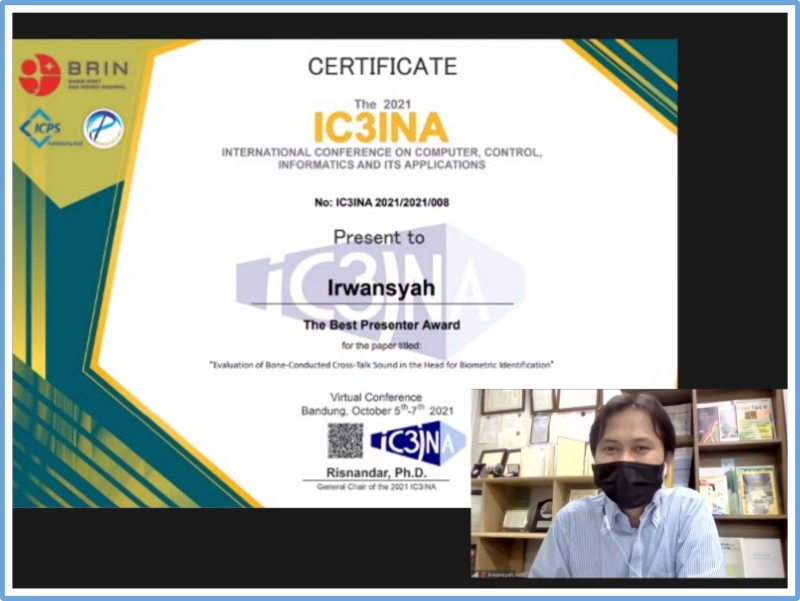

Achievements
Please click one of these two icons below to find the details:
34
Awards & Honours
-
Best Paper Award October 2021
1st Place Best Paper Award
International Conference on Computer, Control, Informatics and Its Applications (IC3INA).
Bandung - Indonesia -
Best Presentation Award October 2021
1st Place Best presentation, voted by audiences
International Conference on Computer, Control, Informatics and Its Applications (IC3INA).
Bandung - Indonesia -
3rd Favorite Winner September 2020
4th Open Innovation Indonesian Medical Education and Research Institute (OI-IMERI 2020).
Jakarta - Indonesia
- YouTube: Our StethoPhone Explainer Video -
Best Paper and Presentation Award September 2019
-
Finalist November 2018

Falling Walls Lab Finale in Berlin, Germany. -
Invited Young Lecturer October 2018Invited Young Lecturer (IYL) Program, Sendai - JAPAN
Tohoku Universal Acoustical Communication Month.
I was selected as one of the 24 IYLs
who received full travel grants.
link of the event
-
Student Paper Award October 2018

1st Prize Student Paper Award, Nara - JAPAN
IEEE Global Conference on Consumer Electronics
list of the winners -
2nd Place FWLT 2018 May 2018

2nd Place, Falling Walls Lab Tokyo (FWLT) - JAPAN.
Links for the News:
DWIH Tokyo Twitter
University of Tokyo Web
University of Tokyo Web (in Japanese) -
Student Award March 2018

Student Award Chapter Kyushu, Fukuoka - JAPAN.
The Acoustical Society of Japan Kyushu Chapter.
At that time, I was a 2nd year doctoral student.
the link of the selected students -
Best Student Paper November 2017

1st Place Student Paper Award, Bali - INDONESIA
Regional Conference on Acoustics and Vibration. -
Favorite Team December 2016
-
MEXT Scholarship October 2016MEXT Scholarship Recipient for Doctoral Course at Kumamoto University.
-
Student Presentation Award Sept 2016

Student Presentation Award,Toyama - JAPAN
The Spring Meeting of the Acoustical Society of Japan -
Student Award March 2016

Student Award Chapter Kyushu, Fukuoka - JAPAN.
The Acoustical Society of Japan Kyushu Chapter.
At that time, I was a 2nd year master student.
link of the selected students -
Student Poster Award October 2015

Best Student Poster,Kumamoto - JAPAN.
Department of Human & Environmental Informatics, Kumamoto University. -
MEXT Scholarship October 2014MEXT Scholarship Recipient for Master Course at Kumamoto University.


Publications
The chart below briefly summarizes my research activities during my studies.
(ORCID, Scopus or Google Scholar)
@Proceedings{irwan:ASJspring2022,
title = {Measurement of Tone Reception Thresholds With and Without Bone-Conduction-Based Crosstalk Cancellation},
year = {2022}
}
@InProceedings{irwan:LifeTech2022,
title = {Development of Acoustically Optimized, 3D-Printed Stethoscope for Telehealth},
year = {2022}
}
@InProceedings{irwan:IC3INA2021,
title = {Evaluation of Bone-Conducted Cross-Talk Sound in the Head for Biometric Identification},
year = {2021}
}
@article{irwan:UAC,
title = {In-ear microphone measures in the ear canal with bone conduction stimulation: an application for estimating a cross-talk compensation filter},
year = {2020}
}
@misc{Marinah:JTech,
title = {Analisis Matematis Pengelasan Grey Cast Iron menggunakan Proses GTAW dengan dan Tanpa Preheat},
year = {2021}
}
@InProceedings{fajar:ICAST2019,
title = {Is Zero Electricity Cost Cryptocurrency Mining Possible? Solar Power Bank on Single Board Computers},
year = {2019}
}
@article{irwan:VinPS2019,
title = {Binaural speech segregation system on single board computer},
year = {2019}
}
@InProceedings{irwan:ICA2019,
title = {Estimation of cross-talk compensation filter using bone conduction ear microphone},
year = {2019}
}
@TechReport{kai:IEICE,
title = {On speaker identification under multiple-talker condition using frequency domain binaural model},
year = {2019}
}
@TechReport{mori:IEICE,
title = {Implementation to solve a front-back confusion on frequency domain binaural model},
year = {2019}
}
@article{irwan:ASTletter,
title = {Bone conduction microphone measures in the external auditory canal: an application
for implementing cross-talk cancellation for bone-conducted sound},
year = {2019}
}
@InProceedings{irwan:GCCE2018,
title = {Open-Source Raspberry Pi Hearing Assistance Device with Consumer Hardware},
year = {2018}
}
@Proceedings{bagus:ASJautumn,
title = {Application of Frequency Domain Binaural Model for Keyword Spotting on Simultaneous Speech},
year = {2018}
}
@TechReport{mitarai:IEICE,
title = {Real-time implementation of frequency domain binaural model-based speech segregation by using sound source direction information obtained by a webcamera},
year = 2018
}
@TechReport{kuse:IEICE,
title = {On multiple-loudspeaker system for simultaneous reproduction of two sound sources},
year = 2018
}
@InProceedings{kuse:YKJCA,
title = {Development of a Speaker Array System to Control Directivity Characteristics in Low Frequency Range},
year = {2017}
}
@misc{ernawita:JFA,
title = {Preparasi dan Karakterisasi Dye-sensitized Solar Cell (DSSC) dengan Pewarna Ekstrak Jeruk: Pengaruh Variasi Komposisi Karotenoid dan Flavonoid Terhadap Efisiensi Sel Surya},
year = {2017}
}
@Proceedings{irwan:ASJkyushu,
title = {Frequency Domain Binaural Model (FDBM)-Based Speech Segregation: Discussion on Buffer Size for Low-Latency Real-Time Processing using Single Board Computer},
year = {2017}
}
@InProceedings{irwan:ICSE2017,
title = {Real-Time Binaural Speech Segregation using a Single Board Computer and In-Ear Microphones/Earphones: Low-Cost Hearing Aids for Use in Research and Education},
year = {2017}
}
@InProceedings{irwan:RECAV2017,
title = {Performance Evaluation of a Back-to-Back Speaker System using a Single Board Computer as a Digital Signal Processor},
year = {2017}
}
@InProceedings{kai:ICAST2017,
title = {Real-Time Frequency Domain Binaural Model-Based Speech Segregation using a Single Board Computer: Application for Binaural Hearing Aids},
year = {2017}
}
@InProceedings{irwan:TENCON2017,
title = {Application of Active Control Technique on a Bone Conduction Headphone for Estimating a Cross-talk Compensation Filter},
year = {2017}
}
@InProceedings{irwan:INTERNOISE46,
title = {Development of a Semi-Circular Speaker Array System to Control Low-Frequency Radiation Pattern},
year = {2017}
}
@article{irwan:AST2016,
title = {Estimation of time difference of arrivals between direct sound and reflected sounds using time-frequency information of a single-channel signal},
year = {2016}
}
@InProceedings{irwan:ICOMPAC,
title = {A Theoretical Study on Directivity Control of Multiple-Loudspeaker System with a Quadrupole Radiation Pattern in Low Frequency Range},
year = {2016}
}
@Proceedings{irwan:ASJautumn2016,
title = {Outdoor obstacles localization via the intersection of multiple ellipses},
year = {2016}
}
@Proceedings{irwan:ASJspring2016,
title = {Dynamic threshold for a peak detection of estimation method of time difference of arrivals between direct sound and reflected sounds},
year = {2016}
}
@TechReport{irwan:IEICE,
title = {Estimation of sound pressure levels of direct Sound and reflected sounds based on single-channel signal separation},
year = 2015
}
@Proceedings{irwan:ASJautumn,
title = {Performance of estimation method of time difference of arrivals between direct sound and reflected sounds from a single-channel signal},
year = {2015}
}
@TechReport{Onoguchi:IEICE,
title = {Estimation of arrival time differences between direct and reflected sounds from monaural observed signal},
year = 2015
}
@InProceedings{fitri:ISPHOA,
title = {Radial line method for rear-view mirror distortion detection},
year = {2014}
}
@InProceedings{irwan:SEACMA,
title = {Performance evaluation of two-microphone separation with convolutive speech mixtures},
year = {2013}
}
@Proceedings{irwan:SNMA,
title = {Teknik Pemisahan Sinyal Suara menggunakan Deteksi Puncak pada Scattering Plot},
year = {2013}
}
@InProceedings{kusumawardhani:IJCCS,
title = {Application of concentric circle method for detection of rear-view mirror distortion},
year = {2012}
}
Papers below are sorted by research topics.
- Irwansyah, Sho Otsuka, Seiji Nakagawa, "Measurement of Tone Reception Thresholds With and Without Bone-Conduction-Based Crosstalk Cancellation," The Spring meeting of the Acoustical Society of Japan, 2022. (Type: Domestic Conference)
- Irwansyah, Tsuyoshi Usagawa, "In-ear microphone measures in the ear canal with bone conduction stimulation: an application for estimating a cross-talk compensation filter," Acoustical Science and Technology, 41(1), 439-442, 2020. (Type: Journal Article) (doi: 10.1250/ast.41.439)
- Irwansyah, Tsuyoshi Usagawa, "Estimation of cross-talk compensation filter using bone conduction ear microphone," 23rd International Congress on Acoustics, 7232-7238, 2019. (Type: Int. Conference) (doi: 10.18154/RWTH-CONV-239939)
- Irwansyah, Tsuyoshi Usagawa, "Bone conduction microphone measures in the external auditory canal: an application for implementing cross-talk cancellation for bone-conducted sound," Acoustical Science and Technology, 40(5), 356-359, 2019. (Type: Journal Article) (doi: 10.1250/ast.40.356)
- Irwansyah, Tsuyoshi Usagawa, "Application of Active Control Technique on a Bone Conduction Headphone for Estimating a Cross-talk Compensation Filter," IEEE TENCON 2017, 3099-3104, 2017. (Type: Int. Conference) (doi: 10.1109/TENCON.2017.8228394)
Bone Conduction Hearing
- Irwansyah, Sho Otsuka, Seiji Nakagawa, "Evaluation of Bone-Conducted Cross-Talk Sound in the Head for Biometric Identification," International Conference on Computer, Control, Informatics and Its Applications (IC3INA), 2021. (Type: Int. Conference) (doi: 10.1145/3489088.3489119)
Biometrics
- Irwansyah, Sho Otsuka, Seiji Nakagawa, "Development of Acoustically Optimized, 3D-Printed Stethoscope for Telehealth," The 2022 IEEE 4th Global Conference on Life Sciences and Technologies, 2022. (Type: Int. Conference) (under review)
3D Printing of Medical Devices
- Tsuyoshi Usagawa, Irwansyah, "Binaural speech segregation system on single board computer," Vibrations in Physical Systems, 30(1), 1-9, 2019. (Type: Journal Article) (Vibrations in Physical Systems)
- Kai Kiyota, Irwansyah, Kousuke Matsuoka, Tsuyoshi Usagawa, "On speaker identification under multiple-talker condition using frequency domain binaural model," IEICE Technical Report, 118(410), 7-12, 2019. (Type: Technical Report) (IEICE-EA)
- Takuya Mori, Masahiro Koga, Kai Kiyota, Irwansyah, Tsuyoshi Usagawa, "Implementation to solve a front-back confusion on frequency domain binaural model," IEICE Technical Report, 118(410), 13-18, 2019. (Type: Technical Report) (IEICE-EA)
- Irwansyah, Muhammad Bagus Andra, Kai Kiyota, Koki Mitarai, Tsuyoshi Usagawa, "Open-Source Raspberry Pi Hearing Assistance Device with Consumer Hardware," IEEE GCCE, 164-165, 2018. (Type: Int. Conference) (doi: 10.1109/GCCE.2018.8574633)
- Muhammad Bagus Andra，Irwansyah, Tsuyoshi Usagawa, "Application of Frequency Domain Binaural Model for Keyword Spotting on Simultaneous Speech," The Autumn Meeting of the Acoustical Society of Japan, 2018. (Type: Domestic Conference) (Conf. Program Book)
- Koki Mitarai, Kai Kiyota, Irwansyah, Tsuyoshi Usagawa, Real-time implementation of frequency domain binaural model-based speech segregation by using sound source direction information obtained by a webcamera,” IEICE Technical Report, 117(430), 21-26, 2018. (Type: Technical Report) (CiNii Articles)
- Irwansyah, Koutsuke Matsuoka, Kai Kiyota, Tsuyoshi Usagawa, "Frequency Domain Binaural Model (FDBM)-Based Speech Segregation: Discussion on Buffer Size for Low-Latency Real-Time Processing using Single Board Computer," ASJ (Acoustical Society of Japan) Kyushu Student Meeting, 2017. (Type: Domestic Conference)
- Irwansyah, Kai Kiyota, Tsuyoshi Usagawa, "Real-Time Binaural Speech Segregation using a Single Board Computer and In-Ear Microphones/Earphones: Low-Cost Hearing Aids for Use in Research and Education," International Conference on Science and Engineering (ICSE), 2017. (Type: Int. Conference)
- Kai Kiyota, Irwansyah, Tsuyoshi Usagawa, "Real-Time Frequency Domain Binaural Model-Based Speech Segregation using a Single Board Computer: Application for Binaural Hearing Aids," International Student conference on Advanced Science and Technology (ICAST), 2017. (Type: Int. Conference)
Speech Enhancement
- Naoyuki Kuse, Irwansyah, Koshiro Hira, Tsuyoshi Usagawa, "On multiple-loudspeaker system for simultaneous reproduction of two sound sources," IEICE Technical Report, 117(339), 1-6, 2018. (Type: Technical Report) (CiNii Articles)
- Irwansyah, Raphael Masson, Naoyuki Kuse, Tsuyoshi Usagawa, "Performance Evaluation of a Back-to-Back Speaker System using a Single Board Computer as a Digital Signal Processor," Regional Conference on Acoustics and Vibration (RECAV): IOP Conf. Series: Journal of Physics, 1075, 1-5, 2017. (Type: Int. Conference) (doi: 10.1088/1742-6596/1075/1/012022)
- Irwansyah, Naoyuki Kuse, Tsuyoshi Usagawa, "Development of a Semi-Circular Speaker Array System to Control Low-Frequency Radiation Pattern," The 46th INTER-NOISE, 5067-5072, 2017. (Type: Int. Conference) (INCE Conf. Proceedings)
- Naoyuki Kuse, Irwansyah, Koshiro Hira, Tsuyoshi Usagawa, "Development of a Speaker Array System to Control Directivity Characteristics in Low Frequency Range," The Eighth Youngnam and Kyushu Joint Conference on Acoustics , 2017. (Type: Int. Conference) (CiNii Articles)
- Irwansyah, Naoyuki Kuse, Tsuyoshi Usagawa, "A Theoretical Study on Directivity Control of Multiple-Loudspeaker System with a Quadrupole Radiation Pattern in Low Frequency Range," International Conference on Mathematics: Pure, Applied and Computation, 1867(020029), 1-5, 2016. (Type: Int. Conference) (doi: 10.1063/1.4994432)
Loudspeaker Array
- Irwansyah, Taira Onoguchi, Yoshifumi Chisaki, Tsuyoshi Usagawa, "Outdoor obstacles localization via the intersection of multiple ellipses," The Autumn Meeting of the Acoustical Society of Japan, 2016. (Type: Domestic Conference) (J-GLOBAL)
- Irwansyah, Taira Onoguchi, Yoshifumi Chisaki, "Dynamic threshold for a peak detection of estimation method of time difference of arrivals between direct sound and reflected sounds," The Spring Meeting of the Acoustical Society of Japan, 2016. (Type: Domestic Conference) (J-GLOBAL)
- Irwansyah, Taira Onoguchi, Yoshifumi Chisaki, "Estimation of time difference of arrivals between direct sound and reflected sounds using time-frequency information of a single-channel signal," Acoustical Science and Technology, 37(1), 36-39, 2016. (Type: Journal Paper) (doi: 10.1250/ast.37.36)
- Irwansyah, Taira Onoguchi, Yoshifumi Chisaki, "Estimation of sound pressure levels of direct Sound and reflected sounds based on single-channel signal separation," IEICE Technical Report, 115(302), 1-6, 2015. (Type: Technical Report) (IEICE web)
- Irwansyah, Taira Onoguchi, Yoshifumi Chisaki, "Performance of estimation method of time difference of arrivals between direct sound and reflected sounds from a single-channel signals," The Autumn Meeting of the Acoustical Society of Japan, 2015. (Type: Domestic Conference) (J-GLOBAL)
- Taira Onoguchi, Irwansyah, Yoshifumi Chisaki, "Estimation of arrival time differences between direct and reflected sounds from monaural observed signal," IEICE Technical Report, 114(473), 7-12, 2015. (Type: Technical Report) (CiNii Articles)
Estimation of Time Difference of Arrivals
- Murti Marinah, Doty Dewi Risanti, Irwansyah, Detak Yan Pratama, Asep Suharto, Muhammad Fadila, "Analisis Matematis Pengelasan Grey Cast Iron menggunakan Proses GTAW dengan dan Tanpa Preheat," JURNAL TECHNOPRENEUR, 9(1), 14-21, 2021. (Type: Indonesian Article) (doi: 10.30869/jtech.v9i1.698)
- E Ernawita, Irwansyah, Dyah Sawitri, Ruri Agung Wahyuono, "Preparasi dan Karakterisasi Dye-sensitized Solar Cell (DSSC) dengan Pewarna Ekstrak Jeruk: Pengaruh Variasi Komposisi Karotenoid dan Flavonoid Terhadap Efisiensi Sel Surya," Jurnal Fisika dan Aplikasinya, 13(3), 103-108, 2017. (Type: Indonesian Article) (doi: 10.12962/j24604682.v13i3.2839)
Engineering Materials
- Irwansyah, Dhany Arifianto, "Performance evaluation of two-microphone separation with convolutive speech mixtures," South East Asian Conference on Mathematics and its Applications (SEACMA), 2013. (Type: Int. Conference)
- Irwansyah, Dhany Arifianto, Aulia Siti Aisjah, "Teknik Pemisahan Sinyal Suara menggunakan Deteksi Puncak pada Scattering Plot," Seminar Nasional Matematika dan Aplikasinya, 2013. (Type: Domestic Conference)
Speech Separation
- Fitri R., Apriani K., Heru S., A. M. Hatta, Irwansyah, "Radial line method for rear-view mirror distortion detection," International Seminar on Photonics, Optics, and Applications, 9444, 2014. (Type: Int. Conference) (doi: 10.1117/12.2080940)
- A. Kusumawardhani, Heru S., M. T. Nurismu, Irwansyah, Sekartedjo, "Application of concentric circle method for detection of rear-view mirror distortion," The 5-th Indonesia Japan Joint Scientific Symposium, 2012. (Type: Int. Conference) (Google Scholar)
Image Processing
- Fajar Purnama, Irwansyah, Muhammad Bagus Andra, Tsuyoshi Usagawa, "Is Zero Electricity Cost Cryptocurrency Mining Possible? Solar Power Bank on Single Board Computers," the 14th International Student Conference on Advanced Science and Technology (ICAST), 2019. (Type: Int. Conference) (Research Gate)